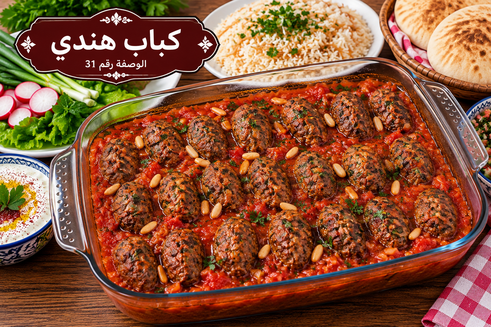

كباب هندي
كفتة بصلصة الطماطم والخضار

مقادير كباب هندي
- 700 غ لحم مفروم
- 2 بصل
- 2 فلفل رومي
- 3 طماطم
- 2 كوب عصير طماطم
- 1½ ملعقة صغيرة ملح
- 1 ملعقة صغيرة بهار مشكل
- ½ ملعقة صغيرة فلفل أسود
- ½ ملعقة صغيرة بابريكا
- 2 ملعقة كبيرة زيت
طريقة عمل كباب هندي
- اخلطي اللحم بنصف الملح والبهار والفلفل وشكليه أصابع أو أقراصًا صغيرة.
- قطعي البصل والفلفل والطماطم ووزعيها في صينية مدهونة بقليل من الزيت.
- رتبي الكباب فوق الخضار واخلطي عصير الطماطم ببقية الملح والبابريكا واسكبيه في الصينية.
- غطي الصينية واخبزيها على 200°م 30 دقيقة ثم اكشفيها 10–15 دقيقة حتى يتحمر الكباب ويتماسك الصوص.